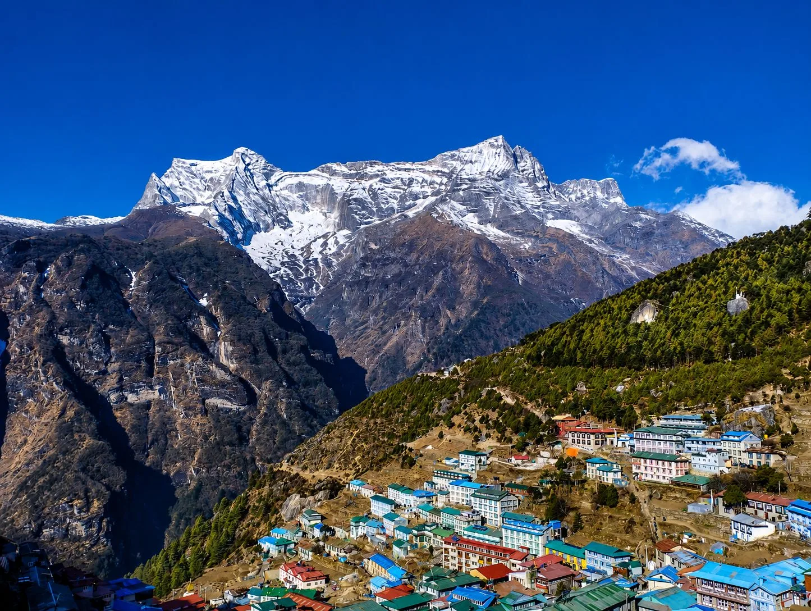
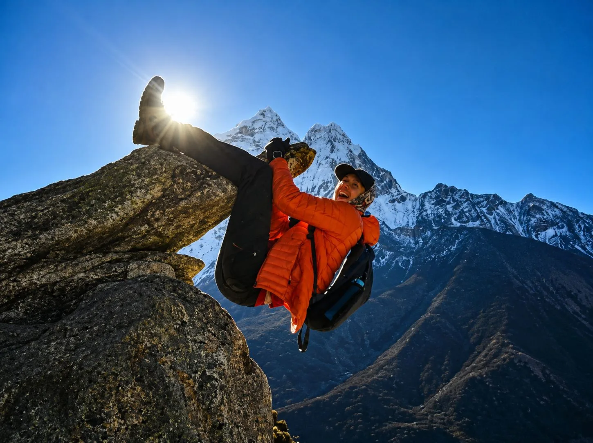
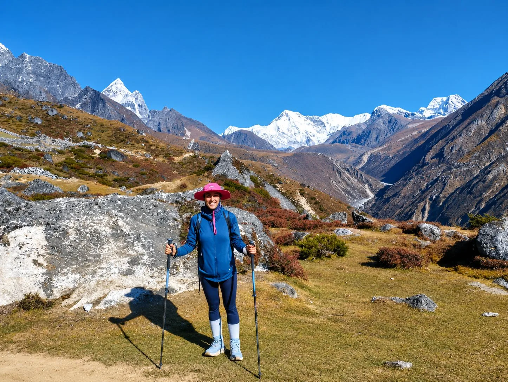
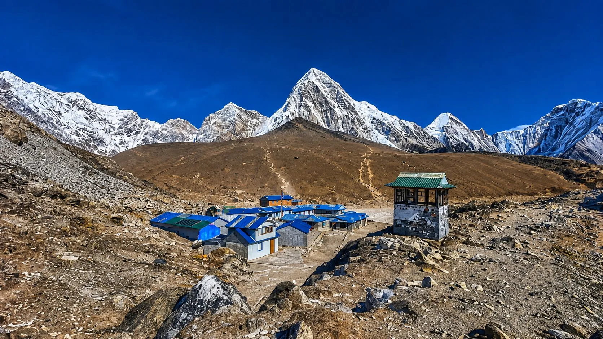

1. The Winter Paradox: Why Trekking to Everest Base Camp in Winter (Dec–Feb) is Nepal's Best-Kept Secret
Mention trekking to Everest Base Camp (5,364m / 17,598ft) in December, January, or February, and most people imagine an insurmountable blizzard-swept arctic nightmare. The reality, however, is one of the best-kept secrets in Himalayan mountaineering.
Winter in the Khumbu region is characterized by high atmospheric pressure. While summer monsoons bring moisture and clouds, winter brings the driest, clearest, and most weather-stable skies of the entire year. Days are blessed with uninterrupted deep-blue skies and crystalline visibility extending over 100 kilometers across the peaks of Everest, Lhotse, Nuptse, and Ama Dablam.
Furthermore, winter offers something money cannot buy during peak spring or autumn: absolute solitude. In October, over 500 trekkers pass through the Sagarmatha National Park gates every single day, crowding suspension bridges, filling teahouses, and buzzing the valley with commercial helicopters. In January, that number drops to fewer than 20 trekkers a day. You have the trails, monasteries, and cozy dining hall wood stoves almost entirely to yourself.
The trade-off? Extreme, bitter sub-zero cold at night. If you respect the freeze and pack appropriate expedition-grade gear, winter EBC is one of the most sublime adventures on Earth.
2. Winter Weather & Temperature Matrix: Month-by-Month Breakdown (December, January, February)
The winter trekking season spans three distinct meteorological phases. Understanding how weather shifts from early to late winter is essential for selecting your travel dates:
| Winter Month | Daytime Temp (Namche / 3,440m) | Nighttime Temp (Gorak Shep / 5,164m) | Sky & Trail Conditions | Trekker Density |
|---|---|---|---|---|
| December The Golden Transition |
8°C to 12°C (Sunny) | -10°C to -16°C | Crisp, sunny days; stable snowpack; teahouses 100% operational through Christmas. | Light to moderate (fading autumn crowds). |
| January The Deep Freeze |
4°C to 8°C (Sunny) | -18°C to -25°C (-30°C wind chill) |
Purest crystal-blue skies; intense freeze; select high teahouses hibernate; trail solitude. | Lowest of the year (10–20 hikers/day). |
| February Late Winter Thaw |
6°C to 10°C (Sunny) | -12°C to -18°C | Longer daylight; occasional late-winter snowstorms; climbing expedition preps begin. | Gradually building toward spring. |
The December Sweet Spot
The first three weeks of December represent arguably the best window for winter trekking. Daytime temperatures are pleasant in direct sunshine, autumn dust has completely settled, all lodges remain fully staffed, and nighttime drops are significantly milder than in January.
3. The Harsh Realities: Extreme Sub-Zero Temperatures, Freezing Nights & Frozen Teahouses

To enjoy winter in the Khumbu, you must confront its challenges with open eyes. The cold in high-altitude Nepal is bone-chilling and unyielding:
The Unheated Bedroom Reality
In Nepalese teahouses, only the communal dining hall is heated by a central stove. Bedrooms have zero heating. Thin plywood walls offer insulation against wind, but none against temperature. At Dingboche, Lobuche, and Gorak Shep, water left in a glass beside your bed will freeze solid into a block of ice within 20 minutes of blowing out your candle!
Frozen Plumbing and Winter Sanitation
- Pipes Freeze Completely: Above Tengboche (3,860m), municipal water pipes freeze solid from 5:00 PM until 10:00 AM the following morning. Running water vanishes.
- Toilet Logistics: Flush toilets stop working. Toilets revert to manual bucket flushes (using water kept in plastic barrels crusted with ice) or dry wooden pit latrines.
- No Wet Showers: Taking a hot shower above Namche Bazaar in winter is medically dangerous. The rapid transition from hot water to freezing drafty air can trigger immediate hypothermia and severe respiratory infections.
4. Master 14-Day Winter Itinerary & Acclimatization Strategy: Shorter Daylight Hours & Safe Pacing
In winter, the sun rises around 6:45 AM and slips behind high Himalayan ridges by 4:30 PM, with total darkness arriving by 5:15 PM. Furthermore, cold air increases your breathing rate, causing faster dehydration and accelerating fatigue. Never rush an acclimatization schedule in winter.
| Day | Winter Route & Overnight Station | Altitude | Walking Hours | Winter Tactical Protocol |
|---|---|---|---|---|
| Day 01 | Fly Kathmandu to Lukla (2,846m); trek to Phakding | 2,610m / 8,563ft | 3–4 hours | Morning direct flight from Kathmandu; gentle downhill walk in sunshine. |
| Day 02 | Trek Phakding to Namche Bazaar | 3,440m / 11,286ft | 5–6 hours | Cross icy suspension bridges; steady climb up Namche Hill before 3:00 PM. |
| Day 03 | Acclimatization Day in Namche Bazaar | 3,440m / 11,286ft | Active hike | Hike to Hotel Everest View (3,880m) in warm morning sun; visit Sherpa museum. |
| Day 04 | Trek Namche Bazaar to Tengboche (or Deboche) | 3,860m / 12,664ft | 5 hours | Stay at Deboche (3,820m) for warmer rhododendron tree shelter. |
| Day 05 | Trek Deboche to Dingboche | 4,410m / 14,468ft | 5–6 hours | Above the tree line; enter the sub-zero wind corridor of Imja Valley. |
| Day 06 | Acclimatization Day in Dingboche | 4,410m / 14,468ft | Active hike | Climb Nangkartshang Peak ridge (4,800m); descend by noon for warm dal bhat. |
| Day 07 | Trek Dingboche to Lobuche | 4,940m / 16,207ft | 5 hours | Pass Thokla Pass memorial cairns; cross hard-packed snowdrifts. |
| Day 08 | Trek Lobuche to Gorak Shep; Visit Everest Base Camp (5,364m) | 5,164m / 16,942ft | 7–8 hours | Reach Gorak Shep, dump heavy packs, push to EBC on Khumbu Glacier moraine. |
| Day 09 | Climb Kala Patthar (5,545m) for Sunset; trek down to Pheriche | 4,240m / 13,910ft | 6–7 hours | Afternoon summit of Kala Patthar (warmer conditions); descent to lower oxygen. |
| Day 10 | Trek Pheriche to Namche Bazaar | 3,440m / 11,286ft | 6–7 hours | Rapid descent back into the rich oxygen, warmth, and bakeries of Namche. |
| Day 11 | Trek Namche Bazaar down to Lukla | 2,846m / 9,337ft | 6–7 hours | Final trekking day; celebrate with guide and porters in Lukla lodge. |
| Day 12 | Fly Lukla back to Kathmandu | 1,400m / 4,593ft | 35m flight | Morning flight to Kathmandu; transfer to hotel for long hot shower! |
| Day 13–14 | Buffer Days in Kathmandu | 1,400m / 4,593ft | Rest & buffer | Mandatory contingency days for winter weather or flight delays. |
5. Kala Patthar in Winter: Why Sunset (Not Sunrise!) is the Sherpa-Recommended Tactical Choice
In standard trekking guides, you are told to climb Kala Patthar (5,545m / 18,192ft) at 4:30 AM in the pitch black to catch the sunrise over Mount Everest. In winter, this traditional advice can be dangerous.
The Extreme Peril of Winter Sunrises
At 5:00 AM in January, temperatures on Kala Patthar drop to -25°C to -30°C with biting summit ridge gales. Trying to hike uphill in thin air while shivering violently creates severe risks of frostnip on toes and fingers, frozen camera batteries, and acute hypothermia.
The Tactical Masterstroke: The Sunset Ascent
Senior Sherpa expedition leaders universally recommend climbing Kala Patthar for sunset (2:30 PM to 5:00 PM) during winter months:
- Dramatically Warmer: After 7 hours of direct solar radiation heating the dark granite rocks, afternoon temperatures hover around -5°C to -10°C—over 15 degrees warmer than at dawn!
- Superior Lighting on Everest: At sunrise, the sun rises behind Everest, placing its famous southwest face in harsh shadow. At sunset, the golden rays hit Everest, Nuptse, and Lhotse directly from the west, igniting the summits in a fiery blaze of pink and gold alpenglow!
- Safer Descent: You enjoy the summit views until 5:00 PM and descend with a headlamp for just 45 minutes down to the warmth of the Gorak Shep lodge.
6. The Frozen Trail: Navigating Black Ice, Snowdrifts & Technical Footing (Microspikes Essential)

While winter is generally dry, shaded trail sections—particularly river ravines, forest gullies below Namche, and the glacial moraine between Lobuche and Gorak Shep—frequently harbor treacherous black ice and hard-packed snow.
Why Kahtoola MICROspikes are Mandatory
Standard trekking boot rubber hardens in sub-zero cold, losing traction on frozen rocks. You do not need heavy mountaineering crampons, but you must carry a pair of elastomeric slip-on microspikes (such as Kahtoola MICROspikes or Black Diamond Blitz Spikes):
- They slip over your hiking boots in 15 seconds without tools.
- Stainless steel 1cm spikes bite firmly into glazed ice, preventing sudden slips and knee injuries.
- Keep them accessible in the top lid of your daypack every day past Dingboche.
Dual Trekking Poles
Trekking poles with winter snow baskets provide two additional points of contact, ensuring stability on frozen moraine scree and helping you test snowdrifts for hidden rock crevices.
7. The -25°C Gear System: Heavyweight Baffled Down, Expedition Sleeping Bags & Thermal Protection

In winter, gear is not about comfort—it is your personal life-support system. A standard 3-season packing list will leave you shivering and vulnerable. You must upgrade three critical gear items:
| Critical Gear Item | Winter Specification Requirement | Why It Is Crucial |
|---|---|---|
| Expedition Down Parka | 800+ fill power, box-wall baffled construction, rated to -20°C/-25°C | Sewn-through light jackets leak heat at stitch lines; box-wall baffles eliminate cold spots in high winds. |
| 4-Season Sleeping Bag | Comfort rating: -20°C to -25°C (-4°F to -13°F) + Silk/Fleece liner | Teahouse quilts cannot stop drafts; this bag ensures 8 hours of restorative, deep sleep. |
| Thermal Base Layers | 2x Heavyweight 100% Merino Wool (250–300 gsm) | Retains thermal insulation even when damp; natural odor resistance for 14 days. |
| Insulated Outer Shell | 3-layer Gore-Tex Pro waterproof/windproof jacket & pants | Blocks biting sub-zero Himalayan winds from stripping your body heat. |
8. Footwear & Extremities Care: Preventing Frostnip, Raynaud's & Cold-Weather Blisters
Your fingers, toes, nose, and ears are the first areas your body sacrifices to maintain core temperature in extreme cold. Protecting your extremities is paramount:
Footwear Strategy
- Boots: Sturdy, waterproof trekking boots (Gore-Tex with Vibram soles) with enough internal volume to accommodate thick winter socks without pinching toes. Restricting blood circulation is the leading cause of cold feet and frostnip.
- Socks: 4 pairs of heavyweight merino wool mountaineering socks (Smartwool or Darn Tough) paired with 2 thin synthetic liner socks that reduce friction blisters.
- Down Camp Booties: After taking off frozen hiking boots in the evening, slip into lightweight down-filled camp booties. They keep your feet toasty inside unheated teahouses.
Handwear Layering System
- Layer 1 (Contact Liners): Touchscreen-compatible thin merino wool or Powerstretch fleece gloves worn at all times.
- Layer 2 (Insulated Mittens): Heavyweight PrimaLoft or down-filled outer mittens with windproof shells. Mittens keep fingers together, retaining 40% more warmth than five-finger gloves.
- Chemical Warmers: Carry 6 to 8 pairs of air-activated hand and toe warmers (HotHands). Drop a pair into your mittens on cold summit mornings.
9. Electronics & Power Management in the Freeze: Lithium Batteries, Solar Limitations & Sleeping Bag Storage
Sub-zero cold is the mortal enemy of modern lithium-ion batteries. In cold ambient air, internal chemical resistance spikes, causing battery percentages to drop from 90% to 1% in seconds.
Survival Strategies for Electronics
- Keep Batteries Inside Your Jacket: While trekking during the day, store your smartphone and camera batteries in an interior zippered chest pocket against your body heat.
- Sleep With Your Electronics: At night, place your smartphone, camera batteries, headlamp, and power banks inside the bottom of your sleeping bag. Your body heat maintains battery longevity.
- Bring High-Capacity Power Banks: Bring a rugged 20,000mAh to 30,000mAh power bank. In winter, cold weather reduces solar panel charging efficiency in teahouses, and cloudy days can cause power cuts.
- Use Lithium AA/AAA Batteries: For headlamps, use Energizer Ultimate Lithium disposable batteries, which function reliably down to -40°C where standard alkaline batteries freeze completely.
10. Winter Teahouse Realities: Bukhari Stoves, Frozen Water Buckets & The Nalgene Bed-Warmer Trick

Surviving and thriving inside winter teahouses requires mastering simple high-altitude rituals:
The Evening Bukhari Circle
Around 4:30 PM, lodge hosts ignite the central dining hall stove (*bukhari*), burning dried yak dung and wood. Trekkers, guides, and Sherpa hosts gather in a tight circle around the glowing metal drum, sharing stories, drinking hot lemon ginger tea, and soaking in radiant warmth until 8:30 PM.
The Nalgene Bed-Warmer Masterstroke
Every night before leaving the dining hall, order 1 liter of boiling water in your wide-mouth Nalgene bottle:
- Screw the lid down firmly and slip it inside an insulated thermal sleeve or wool sock.
- Slide the hot bottle into your sleeping bag footbox 15 minutes before climbing in.
- It preheats your frozen sleeping bag and radiates soothing heat to your feet for 6 to 8 hours!
- By morning, you wake up with a liter of sterile, clean drinking water that has not frozen solid.
11. Cold-Weather Mountain Nutrition: Burning 5,000 Calories Daily, Garlic Soup & Unlimited Dal Bhat
In winter, your body burns vast amounts of energy just maintaining a 37°C core body temperature against sub-zero ambient air. Caloric demands skyrocket to 4,500 to 5,000 calories per day.
What to Eat for Maximum Cold-Weather Resilience
- Dal Bhat Tarkari (The Ultimate Fuel): Steamed rice, hearty lentil soup, and fresh vegetable curry. With unlimited free refills, it provides the massive carbohydrate and protein reserves needed to stay warm.
- Hot Garlic Soup: Known by Sherpas as the natural altitude cure, garlic contains allicin, which promotes healthy blood circulation and thins the blood, easing the burden on your cardiovascular system.
- Sherpa Stew (Syakpa): A thick, piping-hot stew made with handmade dough dumplings, potatoes, radish, and Himalayan herbs that warms you from the inside out.
- Hot Lemon Ginger Honey Tea: Sip 2 to 3 liters of hot herbal tea daily. Dehydration thickens your blood, drastically multiplying the risk of frostbite and altitude sickness.
12. Avoiding the 'Khumbu Cough': Cold-Air Bronchitis Prevention, Buffs & Mask Humidity
One of the most debilitating conditions on winter treks is the infamous Khumbu Cough (high-altitude bronchitis). It is caused by breathing large volumes of freezing, dry, unhumidified air during uphill exertion, which strips the respiratory lining of moisture and causes severe bronchial spasms.
How to Protect Your Lungs
- Wear a Mask or Buff at All Times: Cover your mouth and nose with a merino wool buff, fleece neck gaiter, or thermal neoprene mask while hiking. Your exhaled breath creates a warm, humid pocket of air that pre-conditions every inhalation.
- Breathe Through Your Nose: Whenever pacing allows, inhale through your nose rather than your mouth to utilize your nasal passages' natural warming filters.
- Sip Hot Water Constantly: Carry a 0.5L double-walled vacuum thermos in your daypack filled with hot lemon water, taking small sips every 20 minutes to keep your throat lubricated.
13. Winter Lukla Flights & Logistics: Direct Kathmandu Flights vs. Winter Fog Delays
Flight logistics to Tenzing-Hillary Airport in Lukla (2,846m) undergo a dramatic shift in winter:
The Huge Advantage: Direct Flights from Kathmandu (TIA)
During crowded autumn and spring peak seasons, CAAN redirects all Lukla commercial flights to Manthali Airport in Ramechhap (requiring a 4-hour midnight bus drive). In winter, passenger volume drops, allowing airlines (Tara Air, Summit Air, Sita Air) to operate direct scheduled flights from Kathmandu’s Tribhuvan International Airport! You sleep in your Kathmandu hotel, take a 15-minute taxi to the airport, and land in Lukla 35 minutes later.
The Winter Weather Risk: Terai & Kathmandu Fog
While the mountain skies above Lukla are crystal clear in winter, the Kathmandu valley floor frequently experiences thick morning radiation fog (known as Kuhiro) throughout January, which grounds departures until 10:00 AM or 11:00 AM. Always keep two contingency buffer days in Kathmandu at the end of your trip.
14. Cost & Crowds Advantage: Off-Peak Discounts, Free Rooms & Serene Trail Solitude
Trekking in the off-peak winter season provides undeniable financial and psychological rewards:
| Factor | Peak Season (Oct / Apr) | Winter Season (Dec / Jan / Feb) |
|---|---|---|
| Trail Congestion | High (400–600 trekkers/day; yak traffic jams) | Virtually Zero (10–25 trekkers/day; peaceful trails) |
| Teahouse Room Rates | NPR 1,000–2,500/night; crowded dorms | Often Free or NPR 500 if eating meals at lodge |
| Agency Package Pricing | $1,500 – $1,900 USD | $1,250 – $1,550 USD (15–20% off-peak savings) |
| Lukla Flight Departure | Ramechhap (4h midnight van detour) | Direct from Kathmandu Airport (TIA) |
| Host Hospitality | Rushed staff; crowded dining halls | Warm, attentive, personalized Sherpa hosting |
15. Safety, Winter AMS Risks & Emergency Helicopter Evacuation Realities
Winter conditions elevate the stakes of high-altitude medicine. Acute Mountain Sickness (AMS) must be managed with heightened vigilance:
The Cold-Altitude Danger Loop
Hypothermia and dehydration significantly accelerate the onset of altitude sickness. When you are shivering, your body consumes precious oxygen to generate heat, leaving less oxygen for your brain and tissues. Never allow yourself to get chilled on trail.
Helicopter Rescue in Winter
Emergency helicopter evacuation operates year-round in the Everest region. In fact, clear winter mornings often provide excellent visibility for rescue pilots landing at Pheriche, Dingboche, and Gorak Shep. However, you must verify that your travel insurance policy explicitly covers emergency search and medical evacuation up to 6,000 meters without seasonal exclusions.
16. The Final Winter Verdict: Is the Everest Base Camp Winter Trek Right for You?

Trekking to Everest Base Camp in winter is not for everyone—but for the right adventurer, it is an unforgettable masterpiece.
Winter EBC is Perfect for You If:
- You despise crowded trails, noisy dining halls, and waiting in line at suspension bridges.
- You are an avid photographer who demands the purest, crystal-sharp mountain lighting without atmospheric haze or rain clouds.
- You own or can rent serious cold-weather expedition gear (-20°C sleeping bag, baffled down parka).
- You enjoy the challenge of testing your body and mind against genuine Himalayan cold.
Avoid Winter EBC If:
- You suffer from severe Raynaud's syndrome, poor circulation, or asthma.
- You cannot tolerate unheated bedrooms, freezing squat toilets, or going several days without a hot shower.
- You want to socialize with large international trekking crowds and enjoy lively nightlife in Namche.
Frequently Asked Questions (FAQ) About Everest Base Camp in Winter
Select a category below to explore expert answers to the most common questions travelers ask about Everest Base Camp Trek in Winter 2026:
Altitude & Safety

Ready to Experience the Himalayas?
Whether you are preparing for high-altitude trekking, cultural circuits, or alpine summit expeditions, start planning a bespoke journey tailored to your fitness, travel season, and style.